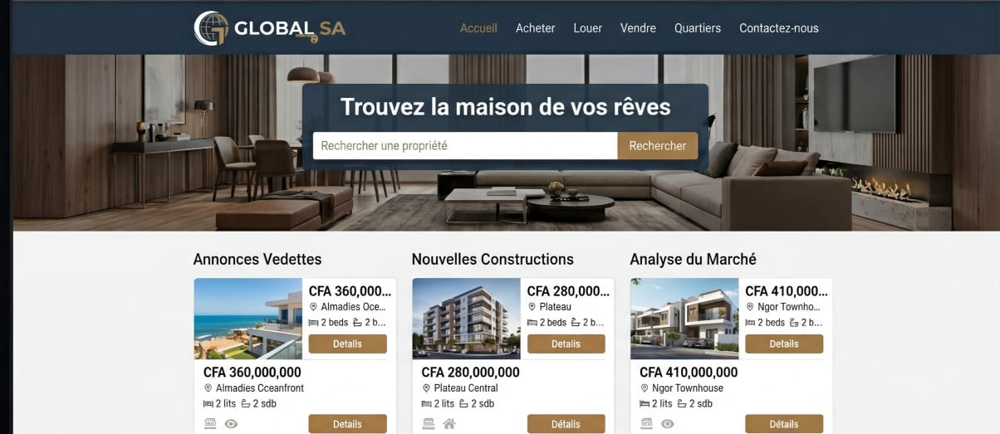
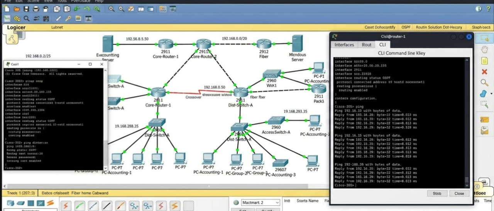
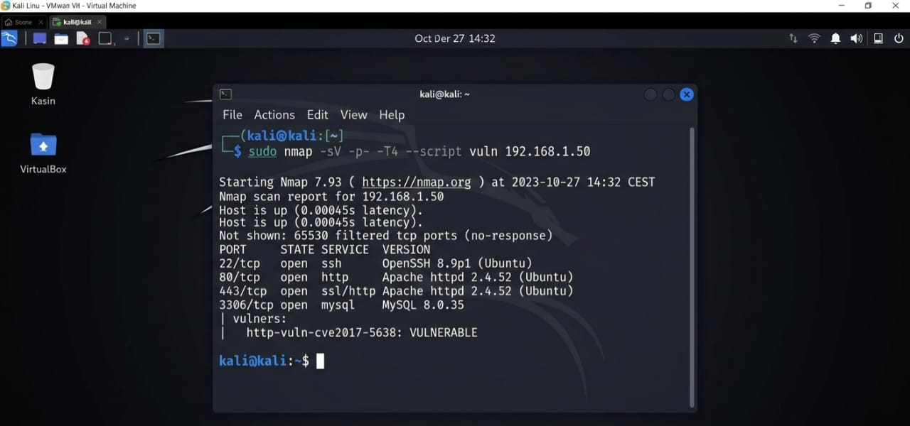

Développement d'un site immobilier dynamique avec HTML, CSS et PHP. Filtrage par type et localisation.

Configuration de topologies, routeurs et switchs sous Packet Tracer. Focus sécurité réseau.

Analyse de cybersécurité : utilisation de Nmap pour détecter les vulnérabilités serveurs.